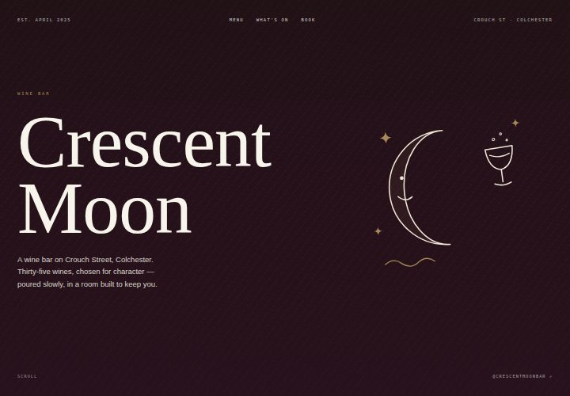

Today
Current design
Illustrated magazine spreads: dark opener, alternating picture and text blocks with hand-drawn doodles, paper cards, pattern fills, and moon dividers.
- Type
- Cormorant, Hanken Grotesk, IBM Plex Mono
- Feel
- Warm, playful, busy